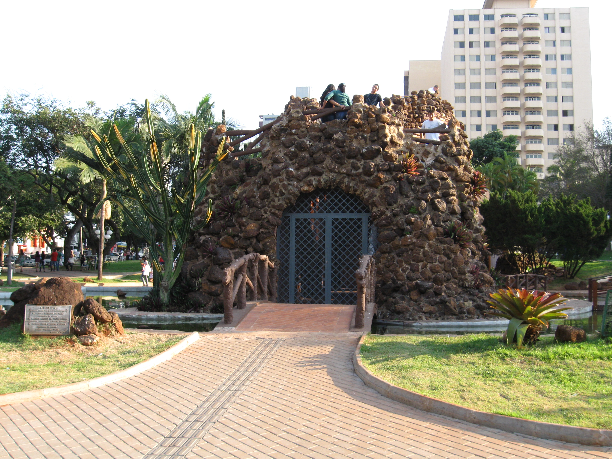
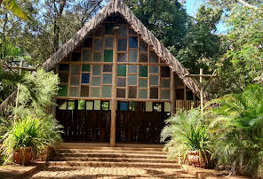

Here I will show you 3 sights
of the city of Limeira SP, I hope you like it S2
Located in Praça Toledo Barros, it was designed to serve as a bandstand, having been built at the time of the 1st World War as a monument to peace. Designed by Ettore Monti, it depicts a medieval castle and was inaugurated in the mid-1920s.
24-hour service, subject to change
in special dates
With approximately 300 bushels, it is a large eucalyptus forest. It was inaugurated in 1984, when the City Hall took possesion of the area that until then had given up and which remained to Fepasa S.A. The green area is nine miles from the city center on via Jurandir Paixão(formerly via Tatuibi).
Opening hours from 9:00 am to 6:00 pm, subject to change on special dates.
Located in an area of 98.6 thousand m², the Park
was inaugurated in September 2007. Belonging to the Municipality of Limeira, located in Vila São João. Lucato, the Municipal Library and
the Science Center.
Opening hours from 6:00 am to 10:00 pm,
subject to change on special days.
Information was taken from Wikipedia, Google Travel, Google Travel, Site Oficial da Prefeitura de Limeira-SP, Site Oficial da Prefe Limeira-SP, Site Oficial da Prefeitura de Limeira-SP.